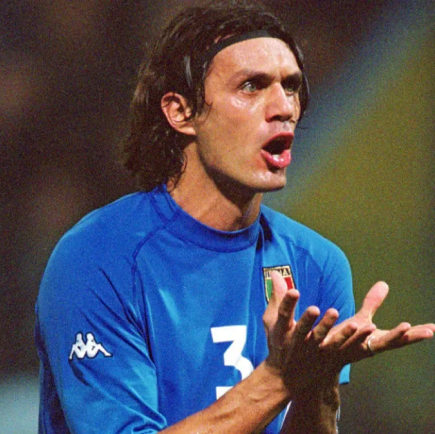
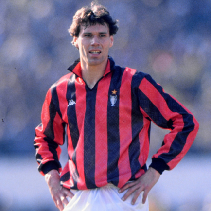
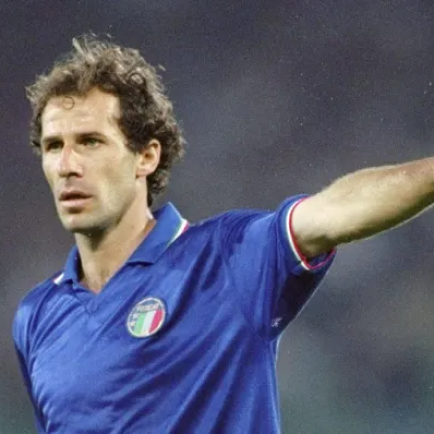
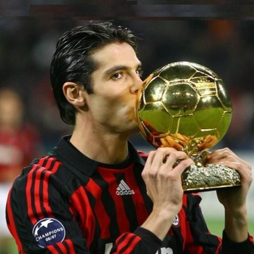

Milan
O dia 16 de dezembro de 1899 é marcado na história pela criação oficial do que viria a ser um dos maiores clubes de futebol da história, a Associazione Calcio Milan. O nome original do time foi dado em referência aos dois esportes que eram praticados, “Milan Football & Cricket Club”. Era controlado pela nata da sociedade, mas com a popularização do futebol, acabou por tornar-se, com o tempo, o time dos trabalhadores da região. Seu primeiro título já veio apenas dois anos depois de sua criação, quando derrotou Juventus e Genoa nos playoffs e foi o campeão do Campeonato Italiano, popularmente chamado de Scudetto. Conquistou tal feito mais duas vezes antes da Primeira Guerra Mundial. Desde o início desse conflito até o fim da Segunda Grande Guerra, o Milan não possuiu bons anos, tendo em vista que a Itália passava por reconstrução e os governantes não viam com bons olhos as heranças inglesas do clube. Por esse motivo, passou-se a chamar, em 1949, Associazione Calcio Milan, perdendo de vez o sotaque inglês no nome.
Títulos
Champions League: 7
Campeonato Italiano: 19
Copa da Italia: 5
Mundial: 4
Ídolos
- 
- 
- 
- 
PAOLO MALDINI
Jogou em apenas um clube durante 25 anos e conquistou 26 títulos. Foi quem mais jogou pelo Milan, 902 partidas, e quem mais atuou na Liga dos Campeões na história, 174 partidas. Pode ser resumido em uma palavra: lenda
MARCO VAN BASTEN
Um dos melhores atacantes da história, ele foi o astro dos times de Arrigo Sacchi e Fabio Capello. Ganhou a Bola de Ouro 3 vezes e foi eleito o melhor centroavante do Milan no século 20
FRANCO BARESI
É um dos capitães com mais longevidade do clube, ficando com a faixa por 15 das 20 temporadas em que jogou. Fez 719 partidas e venceu 6 títulos Italianos e 3 europeus
KAKÁ
Foi um dos símbolos do time de Carlo Ancelotti e o último vencedor da Bola de Ouro pelo clube, antes de Cristiano Ronaldo e Lionel Messi começarem a dominar o prêmio. Kaká foi com certeza o jogador mais decisivo do mundo por um período e ganhou tudo com o time.
San Siro Stadium
O Estádio Giuseppe Meazza, também conhecido como San Siro, situa-se na cidade de Milão, na Itália. Neste estádio jogam o Internazionale e o Milan, e durante alguns anos foi o maior estádio do mundo, com capacidade que chegou a 140 mil pessoas, números gradativamente minorados por questões de segurança. Ainda é o maior estádio italiano.